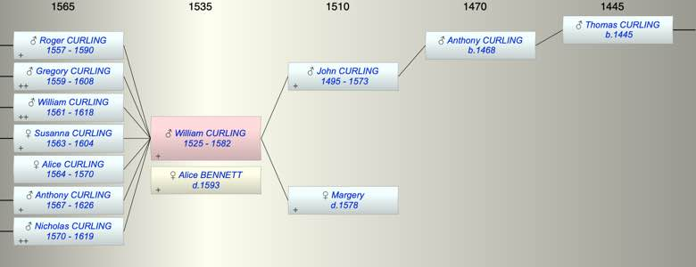

| [Index] |
| William CURLING (1525 - 1582) |
|  |
| b. abt 1525 |
| +. Alice BENNETT ( - 1593) |
| d. 1582 aged 57 |
| Parents: |
| John CURLING (1495 - 1573) |
| Margery ( - 1578) |
| Siblings (3): |
| Robert CURLING (1520 - 1586) |
| Anthony CURLING (1522 - 1586) |
| Sybil CURLING (1530 - ) |
| Events in William CURLING (1525 - 1582)'s life | |||||
| Date | Age | Event | Place | Notes | Src |
| abt 1525 | William CURLING was born | ||||
| abt 1557 | 32 | Birth of son Roger CURLING | |||
| abt 1559 | 34 | Birth of son Gregory CURLING | |||
| abt 1561 | 36 | Birth of son William CURLING | |||
| 1563 | 38 | Birth of daughter Susanna CURLING | St Laurence | Note 1 | |
| 1564 | 39 | Birth of daughter Alice CURLING | St Laurence | Note 2 | |
| 1567 | 42 | Birth of son Anthony CURLING | St Laurence | Note 3 | |
| 1570 | 45 | Birth of son Nicholas CURLING | St Laurence | Note 4 | |
| 1570 | 45 | Death of daughter Alice CURLING (aged 6) | St Laurence | Note 5 | |
| 1573 | 48 | Death of father John CURLING (aged 78) | St Laurence | not found | |
| 1578 | 53 | Death of mother Margery | St Laurence | bur 9 March 1578 at SL. | |
| 1582 | 57 | William CURLING died | Note 6 | ||
| Personal Notes: |
|
Will of William Curling CCA PRC/17/45/60 , PRC/16/78 C/5
• Made 8 February 1582. • William Curling of Dumpton in the parish of St Laurence • to be buried in the church yard of the parish of St Laurence • to the poor hereafter named of the parish: Darbye, Thomas Thomas [sic], & John Stace • to Ric[har]d Curling of St Peters in Thanet • to William Curling the son of Rob[er]t Curling my brother • to mother mason of St Laurence 12 pence • to Mary Archer the daughter of Henry Archer 2 lambs • to daughter Susan Curling £14.00 of lawful money of England at the day of her marriage, or at 24 years • to son Roger Curling £14.00, 5 qts of wheat & 5 qts of barley • to son Anthony Curling, £20.00 in two ‘parcels’, one at the age of 21 and the other when he is 22. • to son Nicholas £10.00 at the age of 22. • If either Anthony or Nicholas dies without issue the other inherits their share. • Residue of movable goods remaining after debts and funeral expences paid to be shared equally in three parts between his wife Alice and sons Gregory and William. • Executors: Alice, Gregory and William Curling • Overseers: Stephen Tarrie and Roger Mockernesse (each to receive one quarter of barley for their pains.) • Witnesses: Stephen Tarye, Roger Mockernesse, Rob[er]t Webbe and John Percye His daughter Susan was born in 1563 and Alice in 1564. Daughter Alice died aged six. It must be assumed that Gregory, William and Roger were born before 1560 |
| Created on a Mac™ using iFamily for Mac™ on 8 Oct 2023 |